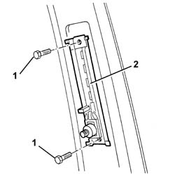

7065A18 HEIGHT ADJUSTER OF ON FRONT SEAT BELT ONE LH OR RH R R
- Path
- Procedures > 70 FITTINGS > 7065 SEAT BELTS AND ACCESSORIES > 7065A FRONT SEAT BELTS > 7065A18 HEIGHT ADJUSTER OF ON FRONT SEAT BELT ONE LH OR RH R R
- Kind
- repair procedure (removal / refitting; the operation number is the code)
- Applies to
- all engines; all production periods
- Interactive page
- https://sloeber94.github.io/elrnDB-aGt/en/#/125001987
Applies to: all engines; all production periods
 Removing
Removing
 Refitting
RefittingOp. 7040L40 REAR COMPARTMENT SCUFF STRIP - R R
Op. 7050A22 REAR SEAT CUSHION - R+R
Op. 7050A14 SPLIT REAR SEAT ASSEMBLY - R+R
Op. 7040H38 CENTRAL PILLAR UPPER ELEMENT - R R
1. Undo the bolts.
2. Remove the seat belt height adjuster.

Applies to: all engines; all production periods
Refitting
RemovingRefit the seat belt height adjuster.
Tighten the bolts to the specified torque.
 | Fastening | Component | Ø | Value (daNm) |
|---|---|---|---|---|
- | Bolt | FRONT SEAT BELT HEIGHT ADJUSTER. . | M8 | 25 |
Op. 7040H38 CENTRAL PILLAR UPPER ELEMENT - R R
Op. 7050A14 SPLIT REAR SEAT ASSEMBLY - R+R
Op. 7050A22 REAR SEAT CUSHION - R+R
Op. 7040L40 REAR COMPARTMENT SCUFF STRIP - R R
Check that the adjuster is working.
Topics linked from this page (5)
- 7040H38 CENTRAL PILLAR UPPER ELEMENT - R R
- 7040H50 REAR PANEL - R R
- 7040L40 REAR COMPARTMENT SCUFF STRIP - R R
- 7050A14 SPLIT REAR SEAT ASSEMBLY - R+R
- 7050A22 REAR SEAT CUSHION - R+R